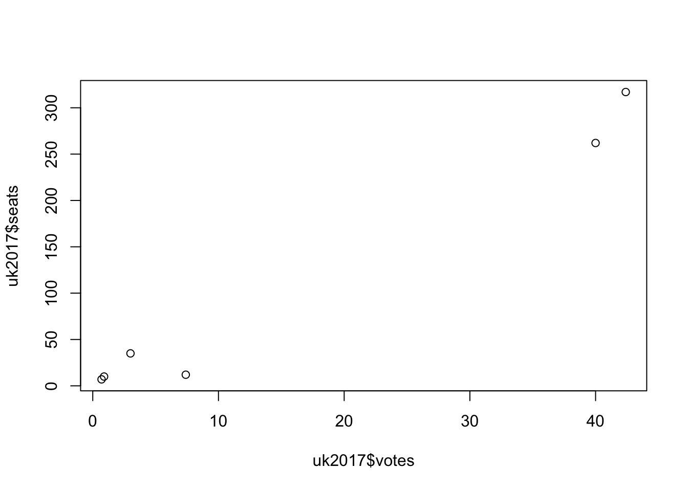
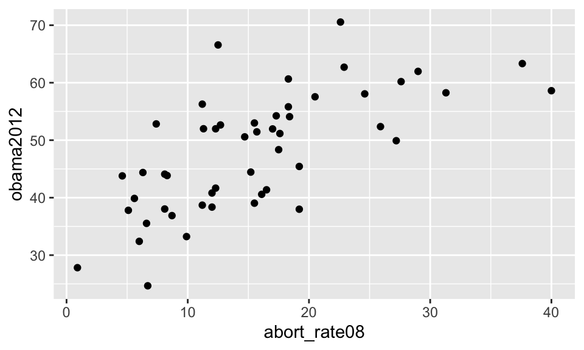
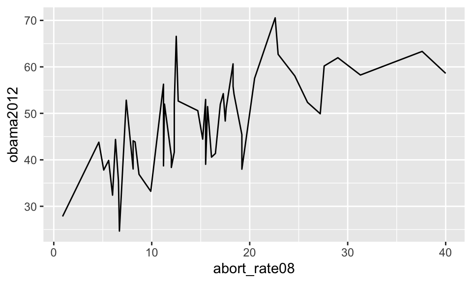
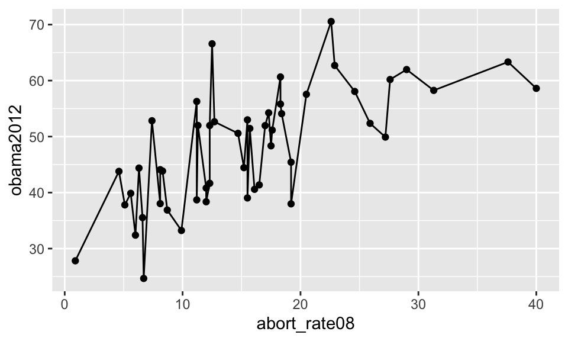
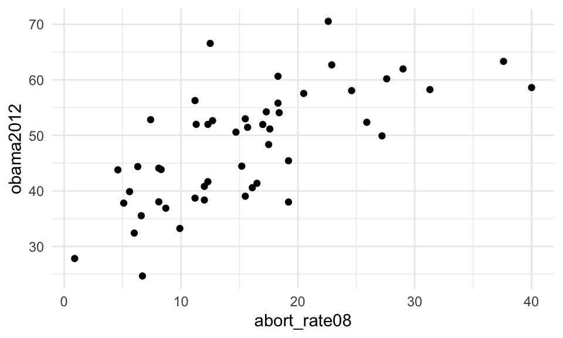
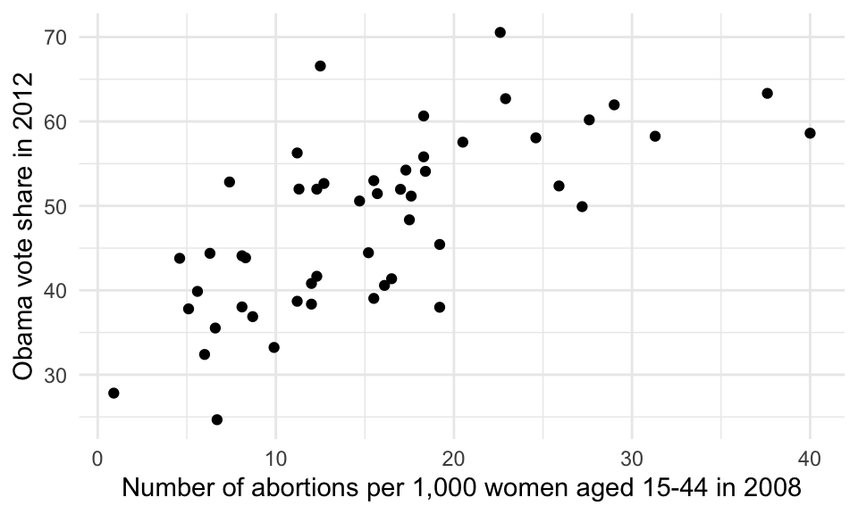

Chapter 7 Introduction to ggplot2
Visualising data is important (K. Healy & Moody, 2014). As with everything in R, there are a lot of different ways to visualise data. One simple way to visualise data is to use base functions in R (i.e. functions that come when you install the R language). Below you will see an example on this.
plot(x=uk2017$votes, y=uk2017$seats)
There is nothing inherently wrong with using a function like this, but the moment we want to tweak the figure, it gets complicated. Accordingly, we will not use the standard functions in R but the package ggplot2 (H. Wickham, 2009). This package makes it easy to create beautiful figures in R.
ggplot2 creates more beautiful figures with better defaults, it is very customizable, and it works within the tidyverse (together with dplyr). For those reasons it is becoming incredibly popular among practitioners and academics alike. That being said, there is an element of personal preference when it comes to data visualisations and ggplot2 is not perfect. While the defaults are good, they could be better. Furthermore, there are functions in the package you should never use (such as qplot(), short for quick plot).
7.1 The basics of ggplot2
You can load ggplot2 by loading the tidyverse (alternatively you can just load the ggplot2 package).
library("tidyverse")The two g’s (gg) in ggplot2 are short for grammar of graphics. The philosophy is that we are working with building blocks in the form of a sentence structure where we can add more components to our visualisation, e.g. change colours and add text. This makes it easy to first create a figure and then tweak it till we are satisfied.
These building blocks are:
- Data (the data frame we will be using)
- Aesthetics (the variables we will be working with)
- Geometric objects (the type of visualisation)
- Theme adjustments (size, text, colours etc.)
7.2 Data
The function we will be using is ggplot(). Here, we will be using the states data from the poliscidata package introduced in Chapter 5.
library("poliscidata")
states <- statesThe first thing we always have to specify in our function is the data frame. In other words, you will always have to use a data frame.
ggplot(states)Do note that if you run the code above - and have the states in your working memory, we will not get anything but an empty plot. The only thing we have done so far is telling R that we would like to create a coordinate system and data from uk2017 should play some role, but this is of course not enough.
7.3 Aesthetics
The next thing we have to specify is what variables in the data frame we will be using and what role they play. To do this we will use the function aes() within the ggplot() function after the data frame (remember the comma after the data frame).
ggplot(states, aes(x = abort_rate08, y = obama2012))In the example above we specify that we are working with two variables, x (Number of abortions per 1,000 women aged 15-44 in 2008) and y (Obama vote share in 2012). If you only will be working with one variable (e.g. a histogram), you should of course only specificy one variable, x. However, now we have only told R what variables we would like to work with, but it is still not enough to actually create a figure.
7.4 Geometric objects
Now we will need to add the geometric object, we would like to visualise. We need to go to a new line and tell R to follow along. To do this, we add a plus (+) at the end of the line. On the new line we add the type of geometric object (geom_), we want add. To replicate the plot above we use geom_point().
ggplot(states, aes(x = abort_rate08, y = obama2012)) +
geom_point()
This is a standard ggplot2 plot with all its defaults. If we instead a scatter plot wanted a line plot, we can change geom_point() to geom_line().
ggplot(states, aes(x = abort_rate08, y = obama2012)) +
geom_line()
The above figure is somewhat misleading so it is just to show the logic of the how geometric objects work. Interestingly, we can add multiple geometric objects to the same plot. Below, we add both geometric objects used above.
ggplot(states, aes(x = abort_rate08, y = obama2012)) +
geom_line() +
geom_point()
7.5 Theme adjustments
What you will see in a typical plot is that it is not done. The axes simply have the variable names, the colours are not great etc. Accordingly, we often need to add and change elements of our plot. Here we add the theme of the plot (described in detail below).
ggplot(states, aes(x = abort_rate08, y = obama2012)) +
geom_point() +
theme_minimal()
We can also easily change the labels by using xlab() and ylab().
ggplot(states, aes(x = abort_rate08, y = obama2012)) +
geom_point() +
theme_minimal() +
ylab("Obama vote share in 2012") +
xlab("Number of abortions per 1,000 women aged 15-44 in 2008")
This is the basic logic of ggplot2.